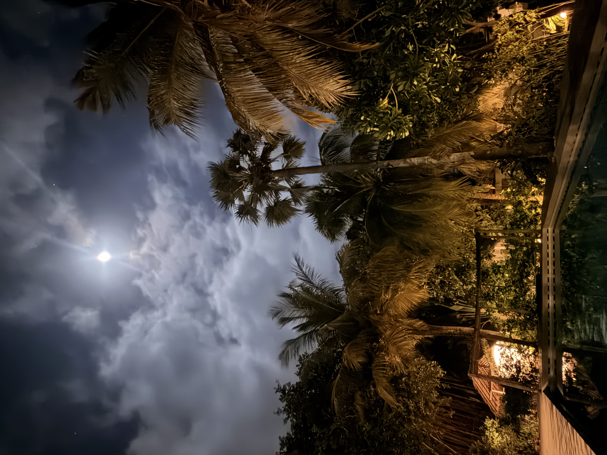
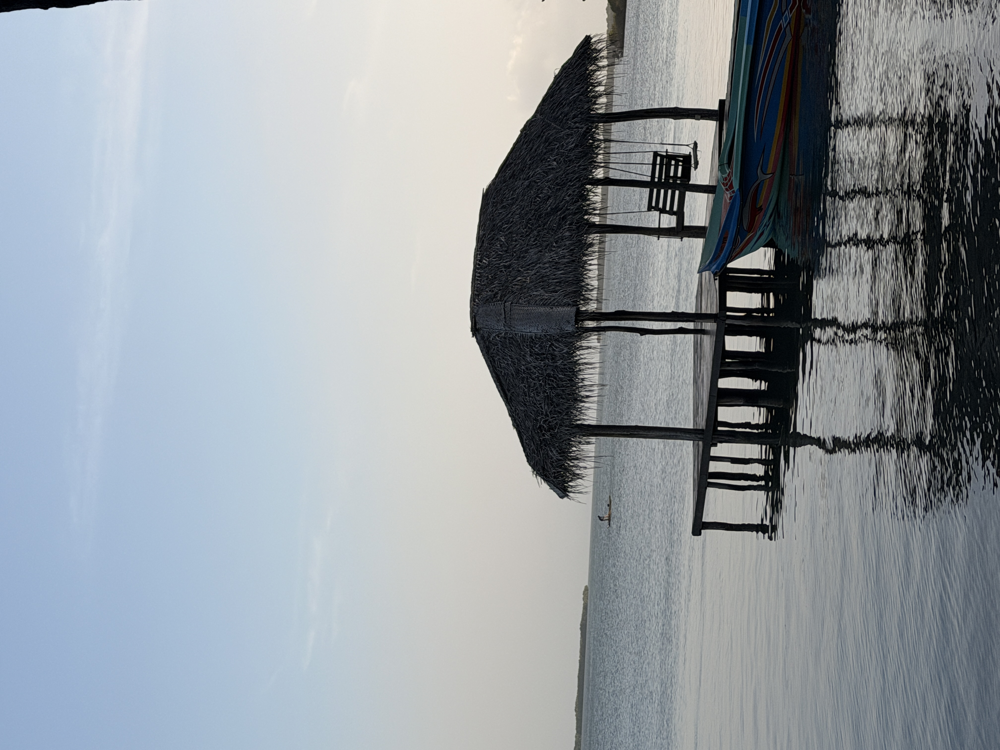

🌊 CHASING THE WIND
从雪域到无垠之海
播放海风 🎵
🗓️ 8月31日 · 启程与抵达
北京 ➔ 成都 ➔ 科伦坡
机翼刺破云层，从北京到成都，再落进科伦坡的湿夜。
辗转十数个小时，车轮又在颠簸中丈量了三个小时的雨林与长路。
窗外掠过的灯火忽明忽暗，把所有的疲惫与心绪，都悄无声息地揉碎在南亚的海风里。
🌙 8月31日 · 半夜
Kalpitiya 静夜
一个人，一只狗
一池水，一轮月
一杯酒，一首歌
一段过往，一抹愁
一池水，一轮月
一杯酒，一首歌
一段过往，一抹愁



🗓️ 9月1日 · 撕裂重力
Dream Spot 泻湖


💨 泻湖现场风况
拉取风况中...
🪁 驭风主力
Duotone Rebel SLS
穿过绵延的沙洲，眼前就是纯粹为极限而生的 Dream Spot。一面是印度洋翻滚咆哮的汹涌白浪，另一面则是被天然沙坝隔绝出如明镜般平整的泻湖水面。西南季风以极其稳定且蛮横的姿态掠过水面，风速毫无杂质地灌满气囊伞翼。
深吸一口气，拉杆，降压，切水。双向板的板刃在镜面一样的水中撕开一道泛着白沫的狭长弧线，没有拖泥带水的抗力，只有纯粹的风力拉扯着整个身体贴着水面高速飞驰。
看准起跳时机的一瞬间，风筝越过头顶，猛力压板起跳——重力在这一刻彻底失效。没有雪山冰裂缝的恐惧，只有整个人被托举在碧蓝海天之间的通透与轻盈。二十年穿梭在全球雪山寻找粉雪，而今天，在印度洋的信风里，我找到了另一场永不融化的起飞。